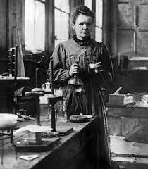

Marie Curie
Bio
Maria Salomea Skłodowska-CurieA (Varsovia, 7 de noviembre de 1867-Passy, 4 de julio de 1934), conocida habitualmente
como Marie Curie,B fue una científica polaca, nacionalizada francesa.
Sus logros fueron:
- Pionera en el campo de la radiactividad
- Fue la primera persona en recibir dos premios Nobel en distintas especialidades
- La primera mujer en ocupar el puesto de profesora en la Universidad de París
En 1995 fue sepultada con honores en el Panteón de París por sus propios méritos.
3 Libros recomendados sobre Marie Curie
- Antes de Hiroshima
- Escritos Biográficos
- Una Polaca en París
